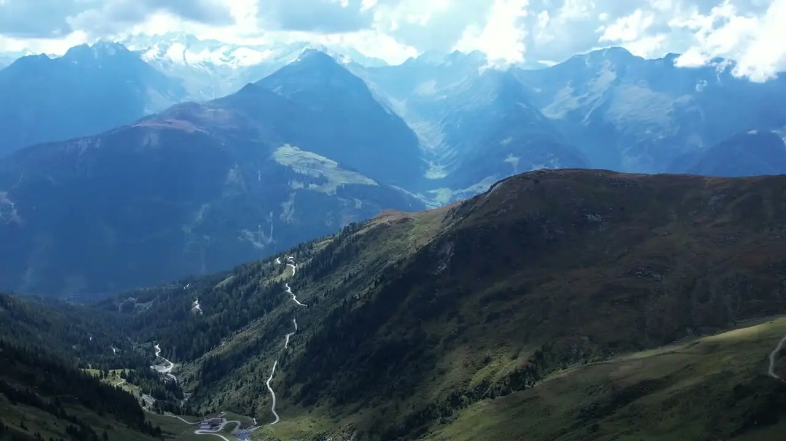

Dietro le quinte
Un video che si apre senza far uscire dalla pagina
Utile per un reel di portfolio, la testimonianza di un cliente o la presentazione di un prodotto. Il video si carica solo quando lo apri.

Dietro le quinte
Utile per un reel di portfolio, la testimonianza di un cliente o la presentazione di un prodotto. Il video si carica solo quando lo apri.